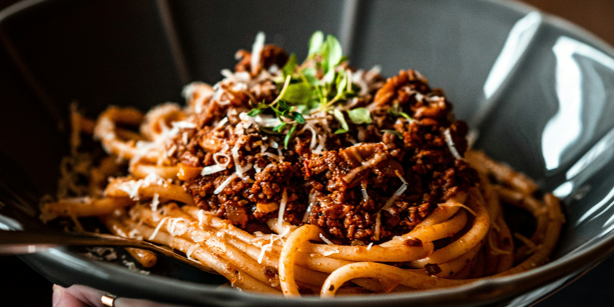

<!DOCTYPE html>
<html lang="en">
  <head>
    <meta charset="UTF-8">
    <title>Bolognese</title>
  </head>
</html>

<h1>Navigation</h1>
<a href="../index.html">All Recipes</a>

<h1>Bolognese</h1>



<h2>Overview</h2>
<p>This recipe is based on a Kenji-Lopez Bolognese recipe without the pork. Just as good, but using a lamb based sausage instead!</p>
<p>I have made this recipe a handful of times, and found that varying the wine from red to wine removes a large amount of the deep wine flavour if you have guests that do not enjoy it. You can also add a touch of chicken bouillon for additional flavour. </p>

<ul><strong><u>Ingredients</u></strong>
    <li>3-5 Tbsp of Olive Oil</li>
    <li>450g (1 lb) of ground beef (regular)</li>
    <li>100g (1/4 lb) of lamb sausage (ACE Market)</li>
    <li>Kosher Salt</li>
    <li>Pepper</li>
    <li>4 Cloves of Garlic, mince</li>
    <li>1 big carrot, dice</li>
    <li>2 pieces of celery, dice</li>
    <li>1 medium white onion, dice</li>
    <li>2 Tbsp of Tomato Paste (Italian Tube)</li>
    <li>Italian Seasoning</li>
    <li>1 cup of Whole Milk</li>
    <li>1L of Low Sodium Chicken Stock</li>
    <li>1 cup of Dry White Wine</li>
</ul>

<ol><strong><u>Instructions</u></strong>
    <li>Heat oil, cut sausage into coins, and cook.</li>
    <li>Once sausage has flavoured the oil, add ground beef, break into medium chunks, and brown. Add salt.</li>
    <li>Once there is no pink left, brown until desired level is reached. Too much browning will make the beef crumbly and dry. </li>
    <li>Prep vegetables, nice fine uniform dice — mirepoix. Add to the beef and cook until softened. Add minced garlic.</li>
    <li>Add the tomato paste and stir until incorporated.</li>
    <li>De-glaze the pan or pot with wine and cook until alcohol is cooked out. Make sure to use a wooden spoon to bring the fond in the bottom of the pan into the sauce.</li>
    <li>Add the chicken stock, cup of whole milk, and stir. Reduce at a gentle simmer until a sauce is made. Stir occasionally, an hourly, then 20 minutes. The fat will render out then reincorporate into the sauce.</li>
    <li>Once complete, toss with pasta and a little pasta water.</li>
    <li>Add freshly grated parmigiano reggiano to enjoy.</li>
</ol>